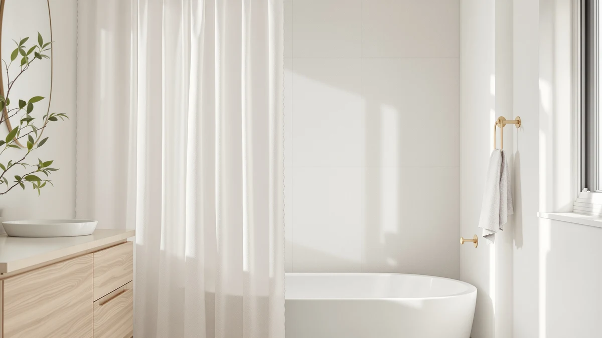

Anroduo Olive Scalloped Linen Textured Shower Curtain Review (2026): Worth It?
Prices and picks verified as of November 2026. Independent, reader-supported reviews.


Quick Answer
This anroduo olive scalloped linen textured shower curtain review compares the ANRODUO Olive Green Scalloped Linen against three similarly priced linen-look curtains on size, material and price. ANRODUO ships 72 inches wide by 108 inches long for a taller drop, while the three alternatives run 108 inches wide by 72 inches long for a wider opening, so the better pick depends on which dimension your shower needs.
Our pick: ANRODUO Olive Green Scalloped Linen — $36.99 Check Price on Amazon
Bottom line: our top pick is the ANRODUO Olive Green Scalloped Linen Textured Shower Curtain at $36.99.
Things to Know Before You Buy
- The ANRODUO Olive Green Scalloped Linen curtain ships at 72 inches wide by 108 inches long, built for extra height rather than extra width, which sets it apart from the three wider alternatives compared in this linen-look curtain review.
- At $36.99, it matches BTTN's boho scalloped set and costs about a dollar more than the Dynamene and BTTN sage curtains compared here, which both sit at $35.99.
- "Linen" in the name describes the weave's look, not the material: the curtain is a polyester and PEVA blend, not woven linen fabric.
- The fabric is dense enough that the listing says a separate liner isn't necessary.
- None of the four curtains in this comparison publishes a star rating or review count, so there is no verified review history to lean on for any of them.
This anroduo olive scalloped linen textured shower curtain review looks at a single listing, a 72 inch wide by 108 inch long curtain in solid olive green with a black scalloped hem, and asks whether its unusual length and finish justify its $36.99 price next to three similarly styled alternatives.
We compared its listed dimensions, material and price against BTTN's boho scalloped set, Dynamene's waffle-weave curtain and BTTN's sage green linen-textured curtain, three curtains in the same general price band. The comparison isn't a straight swap on size. ANRODUO ships 72 inches wide by 108 inches long for extra height, while the other three ship 108 inches wide by 72 inches long for extra width, so each one solves a different sizing problem depending on what your shower actually needs.
Why You Should Trust Us
Ilane Tall covers bathroom textiles and shower hardware for Best Shower Curtains, and this anroduo olive scalloped linen textured shower curtain review follows the same research process used across the site: comparing manufacturer specs, current Amazon pricing and verified owner feedback instead of running a physical testing lab. We do not own one of these curtains, and we do not claim hands-on use of any curtain we cover here. Instead, we pull the listed size, material, price and included accessories straight from the retailer, then weigh those figures against what verified buyers report after living with comparable linen-look and waffle-weave curtains. You can read the full methodology behind every review on this site on our how we research page, and we used that same approach for this review, from the specs table to the final verdict.
How We Compared
Our process for this anroduo olive scalloped linen textured shower curtain review starts with each manufacturer's own listing: size, material, price and included accessories, checked against the three comparison curtains on the same points. From there, we read through the patterns in verified owner reviews on comparable linen-look and waffle-weave curtains to see how scalloped hems, weighted hems and heavier fabric weights tend to hold up once a curtain is hanging in a real bathroom. We did not buy, hang or inspect any of the four curtains ourselves. None of the four listings in this comparison publishes a star rating or review count, so we weighed spec sheets and pricing against each other rather than leaning on a review tally that doesn't exist yet for any of them.
Overview & Specs

ANRODUO Olive Green Scalloped Linen
What we like
- Ships 36 inches longer than a standard curtain, at 108 inches total, for taller enclosures or high-mounted rods
- Faux linen fabric is dense enough that the listing says a separate liner isn't necessary
- Includes 12 rust-resistant metal hooks, so you don't need to buy hooks separately
Flaws but not dealbreakers
- The 108 inch length is excessive for a standard-height shower and may need hemming to avoid pooling at the floor
- The listing doesn't publish a star rating or review count, unlike some comparable linen-look curtains
| Material | Polyester / PEVA |
| Size | 72"W x 108"L (Pack of 1) |
ANRODUO builds this curtain around two choices: a solid olive green colorway and an unusually tall 108 inch length, 36 inches more than the 72 inch size most curtains use. The fabric is a polyester and PEVA blend woven with a two-yarn parallel pattern that gives it a textured, cross-hatched surface instead of a flat sheet, finished with a black scalloped edge along three sides. The listing includes 12 bonus metal hooks, described as rust-resistant and easy to slide, so setup doesn't require a separate hook purchase. At $36.99, it costs a dollar more than the Dynamene and BTTN sage curtains in this comparison, both priced at $35.99, and matches BTTN's boho scalloped set at the same $36.99.
Fabric density is the main selling point beyond color and length. The listing describes the weave as thicker than a traditional single-ply curtain, dense enough that it isn't see-through and doesn't need a liner behind it for privacy. That density adds real weight to a curtain that's already 36 inches longer than standard, which is worth factoring in before you commit to the extra length: a tall enclosure or a rod mounted higher than a standard stall calls for will make good use of the extra drop, while an average bathroom will likely need to hem the bottom or accept fabric pooling near the tub.
What We Liked
The clearest strength in this anroduo olive scalloped linen textured shower curtain review is fabric density. ANRODUO's faux linen weave is built thick enough that the listing skips the usual advice to pair it with a liner, which simplifies setup if your bathroom doesn't already have one hanging. The black scalloped hem gives it a decorative edge that a plain rectangular curtain doesn't offer, and the solid olive colorway is a specific choice among curtains in this comparison that otherwise lean toward white, sage green or printed patterns. Twelve rust-resistant hooks ship in the box, so you aren't stuck sourcing twelve more on top of the $36.99 price, and the two-yarn parallel weave gives the surface a textured, woven look rather than the flat sheen of a basic polyester curtain.
What Could Be Better
The 108 inch length is the biggest question mark in this comparison. Most bathrooms use a curtain closer to 72 or 74 inches long, so this curtain's extra three feet only pays off for a tall enclosure or a rod set higher than usual. If your rod sits at a normal height, you're left hemming the bottom or accepting fabric pooling near the tub, neither of which the product listing mentions. ANRODUO also doesn't publish a star rating or review count, which this anroduo olive scalloped linen textured shower curtain review can't work around with specs alone, so you have less third-party proof to lean on than you would with a curtain that already has an established review history. The solid olive color is also a one-way bet: if it doesn't match your bathroom, there's no second colorway in this listing to fall back on.
Who Is It For?
The ANRODUO Olive Green Scalloped Linen curtain fits a shower with real extra height to cover, a tall enclosure or a rod mounted well above a standard stall, since the 108 inch length only pays off in that specific situation. It also suits anyone set on a solid olive accent rather than the white, sage green or printed options in the rest of this comparison. If your shower is wider than standard instead of taller, or you want a published review history before you buy, compare it against BTTN's boho set, Dynamene's waffle weave or BTTN's sage curtain below, all built 108 inches wide by 72 inches long. Shoppers furnishing more than one bathroom can also browse our best extra-wide shower curtains roundup for more options sized the same way as those three alternatives.
Alternatives to Consider
If the ANRODUO curtain's 108 inch length doesn't match your shower, or its missing review history rules it out, these three alternatives solve a different problem: width instead of height. All three ship 108 inches wide by 72 inches long, a boho scalloped set, a heavyweight waffle weave, and a sage green linen-textured curtain, priced within a dollar of ANRODUO's $36.99.

Also Great
BTTN 108x72 Boho Scalloped Linen
At the same $36.99 price as ANRODUO, BTTN's boho set trades extra height for extra width, shipping 108 inches wide by 72 inches long with three-sided black scalloped edges and a 230GSM water-resistant weave that repels droplets instead of absorbing them.
$36.99
Check Price on Amazon
Best Value
Dynamene Extra Wide Waffle Shower
Priced a dollar below ANRODUO at $35.99, Dynamene's waffle-weave curtain runs the same 108 by 72 inch wide format and adds a 256GSM heavyweight fabric with a water, oil and stain-repellent finish and a weighted hem that resists billowing.
$35.99
Check Price on Amazon
Best Value
BTTN 108x72 Linen Textured Waterproof
Also $35.99, BTTN's sage green curtain shares the 108 by 72 inch wide format and a 230GSM linen-textured weave, and ships with 18 hooks and 18 grommets instead of the 12 hooks ANRODUO includes.
$35.99
Check Price on AmazonHow long is the ANRODUO Olive Green Scalloped Linen Shower Curtain?
It ships at 72 inches wide by 108 inches long, 36 inches taller than the standard 72 inch curtain size most bathrooms use.
What is the ANRODUO shower curtain made of?
It is a polyester and PEVA blend woven with a two-yarn parallel pattern to look like linen.
Frequently Asked Questions
How long is the ANRODUO Olive Green Scalloped Linen Shower Curtain?
It ships at 72 inches wide by 108 inches long, 36 inches taller than the standard 72 inch curtain size most bathrooms use. That extra length suits a tall shower enclosure or a rod mounted higher than usual, not a wide shower opening.
What is the ANRODUO shower curtain made of?
It is a polyester and PEVA blend woven with a two-yarn parallel pattern to look like linen. The word linen in the name describes the texture, not the material, since the curtain contains no woven linen fiber.
Is the ANRODUO Olive Green Scalloped Linen curtain worth it compared to BTTN and Dynamene?
This anroduo olive scalloped linen textured shower curtain review found it priced the same as BTTN's boho set at $36.99, and a dollar more than Dynamene's waffle weave and BTTN's sage curtain at $35.99 each. Dimensions matter more than price here: ANRODUO is built for extra height, while the other three are built for extra width, so the better buy depends on which one your shower actually needs.
Final Verdict
This anroduo olive scalloped linen textured shower curtain review comes down to one tradeoff: extra height versus extra width. ANRODUO is the only curtain in this comparison built for the former, running 72 inches wide by 108 inches long at $36.99, with a solid olive colorway, a black scalloped hem and 12 included hooks. BTTN's boho set matches that price while running 108 by 72 inches wide, and Dynamene's waffle weave and BTTN's sage curtain undercut it by a dollar at $35.99 in that same wide format. None of the four publishes a star rating, so there's no review history to lean on for any of them. For a tall enclosure or a high-mounted rod, the ANRODUO Olive Green Scalloped Linen curtain is the pick worth ordering. For a wide shower opening, skip straight to BTTN, Dynamene or BTTN's sage curtain instead.